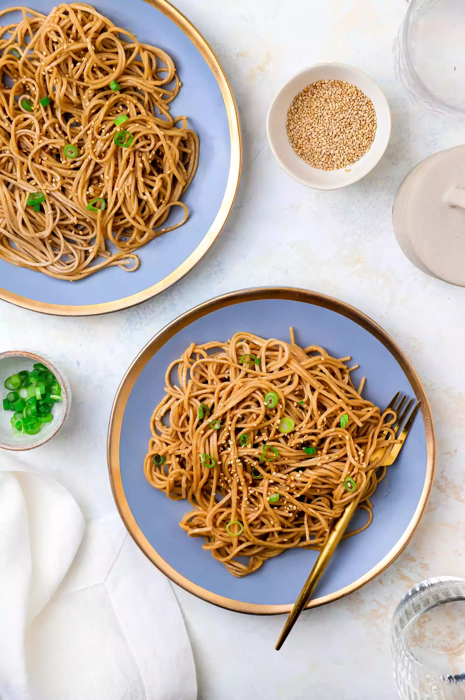

Sesame Peanut Noodles

Description
Make a big batch of these nutty, sweet, and soy saucy noodles and enjoy them cold for a quick lunch over a few days. It’s the best make-ahead recipe for your back pocket!
Soba Noodles Are My Favorite
I like to use soba noodles in this recipe. They are chewy and have an earthy flavor which perfectly complements the peanut butter and sesame dressing. If you can’t find soba noodles, rice noodles and egg noodles are also great options!
Ingredient
- soba noodles
- peanut butter
- sesame
Steps
This recipe is easy and straightforward, but here are two things to watch out for:
-
I prefer natural peanut butter because it contains no additives or sweeteners; the only ingredients are peanuts and salt. Natural peanut butter has a more liquidy texture than conventional peanut butter, so it will blend more easily into the sauce.
-
Toss the cooked noodles with sesame oil immediately after rinsing and draining them. This will make sure the noodles don’t stick to each other.